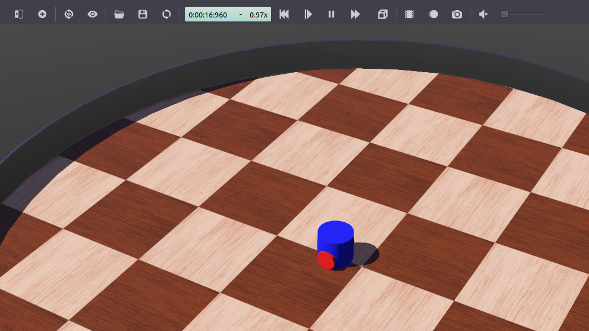

Mise en place d’une simulation de robot (Webots)
Objectif : Configurez une simulation de robot et contrôlez-la depuis ROS 2.
Niveau du didacticiel : Avancé
Durée : 20 minutes
Contenu
Arrière-plan
Plusieurs simulateurs de robots peuvent être utilisés avec ROS 2, tels que Gazebo, Webots, etc. Contrairement à turtlesim, ils fournissent des résultats assez réalistes en s’appuyant sur des modèles basés sur la physique pour les robots, les capteurs, les actionneurs et les objets. Par conséquent, ce que vous observez en simulation est très proche de ce que vous obtiendrez lors du transfert de vos contrôleurs ROS 2 vers un vrai robot. Dans ce didacticiel, vous allez utiliser le simulateur de robot Webots pour configurer et exécuter un scénario de simulation ROS 2 très simple.
Le package webots_ros2 fournit une interface entre ROS 2 et Webots. Il comprend plusieurs sous-packages, mais dans ce tutoriel, vous allez utiliser uniquement le sous-package webots_ros2_driver pour implémenter un plugin Python contrôlant un robot simulé. Certains autres sous-packages contiennent des démos avec différents robots tels que le TurtleBot3. Ils sont documentés dans la page Démos.
Conditions préalables
Il est recommandé de comprendre les principes de base de ROS abordés dans le débutant Tutoriels. En particulier, Utiliser turtlesim et rqt, ../../Beginner-CLI-Tools/Understanding-ROS2-Topics/ Comprendre-ROS2-Sujets, Créer un espace de travail, ../../Beginner-Client- Libraries/Creating-Your-First-ROS2-Package et Création d’un fichier de lancement sont des prérequis utiles.
Les commandes Linux et ROS de ce tutoriel peuvent être exécutées dans un terminal Linux standard. Voir les instructions d’installation Webots ROS 2 Linux.
Les commandes Linux et ROS de ce tutoriel doivent être exécutées dans un environnement WSL (Windows Subsystem for Linux). Voir les instructions d’installation de Webots ROS 2 Windows.
Les commandes Linux et ROS de ce tutoriel doivent être exécutées dans un conteneur Docker personnalisé configuré avec le package webots_ros2_driver. Voir les instructions d’installation de Webots ROS 2 macOS.
Pour installer webots_ros2_driver depuis un terminal, procédez avec les commandes suivantes.
sudo apt update
sudo apt install ros-rolling-webots-ros2-driver
source /opt/ros/rolling/setup.bash
Note
Si vous souhaitez installer l’ensemble du package webots_ros2, suivez ces instructions.
Tâches
1 Créer la structure du package
Organisons le code dans un package ROS 2 personnalisé. Créez un nouveau package nommé my_package à partir du dossier src de votre espace de travail ROS 2. Changez le répertoire courant de votre terminal en ros2_ws/src et exécutez :
ros2 pkg create --build-type ament_python --node-name my_robot_driver my_package --dependencies rclpy geometry_msgs webots_ros2_driver
L’option --node-name my_robot_driver créera un modèle de plug-in Python my_robot_driver.py dans le sous-dossier my_package que vous modifierez ultérieurement. L’option --dependencies rclpy geometry_msgs webots_ros2_driver spécifie les packages nécessaires au plugin my_robot_driver.py dans le fichier package.xml. Ajoutons un dossier launch et un dossier worlds dans le dossier my_package.
cd my_package
mkdir launch
mkdir worlds
Vous devriez vous retrouver avec la structure de dossiers suivante :
src/
└── my_package/
├── launch/
├── my_package/
│ ├── __init__.py
│ └── my_robot_driver.py
├── resource/
│ └── my_package
├── test/
│ ├── test_copyright.py
│ ├── test_flake8.py
│ └── test_pep257.py
├── worlds/
├── package.xml
├── setup.cfg
└── setup.py
2 Configurer le monde de la simulation
Vous aurez besoin d’un fichier monde contenant un robot pour lancer votre simulation. Téléchargez ce fichier de monde et déplacez-le dans my_package/worlds/.
Il s’agit en fait d’un fichier texte assez simple que vous pouvez visualiser dans un éditeur de texte. Un robot simple est déjà inclus dans ce fichier mondial my_world.wbt.
Note
Si vous souhaitez apprendre à créer votre propre modèle de robot dans Webots, vous pouvez consulter ce tutoriel.
3 Modifiez le fichier my_robot_driver.py
Le sous-paquet webots_ros2_driver crée automatiquement une interface ROS 2 pour la plupart des capteurs. Dans cette tâche, vous allez étendre cette interface en modifiant le fichier my_robot_driver.py.
Note
Le but de ce tutoriel est de montrer un exemple de base avec un nombre minimum de dépendances. Cependant, vous pouvez éviter l’utilisation de ce plugin Python en utilisant un autre sous-package webots_ros2 nommé webots_ros2_control, introduisant une nouvelle dépendance. Cet autre sous-paquet crée une interface avec le paquet ros2_control qui facilite le contrôle d’un robot à roues différentielles.
Ouvrez my_package/my_package/my_robot_driver.py dans votre éditeur préféré et remplacez son contenu par ce qui suit :
import rclpy
from geometry_msgs.msg import Twist
HALF_DISTANCE_BETWEEN_WHEELS = 0.045
WHEEL_RADIUS = 0.025
class MyRobotDriver:
def init(self, webots_node, properties):
self.__robot = webots_node.robot
self.__left_motor = self.__robot.getDevice('left wheel motor')
self.__right_motor = self.__robot.getDevice('right wheel motor')
self.__left_motor.setPosition(float('inf'))
self.__left_motor.setVelocity(0)
self.__right_motor.setPosition(float('inf'))
self.__right_motor.setVelocity(0)
self.__target_twist = Twist()
rclpy.init(args=None)
self.__node = rclpy.create_node('my_robot_driver')
self.__node.create_subscription(Twist, 'cmd_vel', self.__cmd_vel_callback, 1)
def __cmd_vel_callback(self, twist):
self.__target_twist = twist
def step(self):
rclpy.spin_once(self.__node, timeout_sec=0)
forward_speed = self.__target_twist.linear.x
angular_speed = self.__target_twist.angular.z
command_motor_left = (forward_speed - angular_speed * HALF_DISTANCE_BETWEEN_WHEELS) / WHEEL_RADIUS
command_motor_right = (forward_speed + angular_speed * HALF_DISTANCE_BETWEEN_WHEELS) / WHEEL_RADIUS
self.__left_motor.setVelocity(command_motor_left)
self.__right_motor.setVelocity(command_motor_right)
Comme vous pouvez le voir, la classe MyRobotDriver implémente trois méthodes.
La première méthode, nommée init(self, ...), est en fait l’homologue ROS du constructeur Python __init__(self, ...). Il obtient d’abord l’instance du robot à partir de la simulation (qui peut être utilisée pour accéder à l’API du robot Webots <https://cyberbotics.com/doc/reference/robot?tab-language=python>`_). Ensuite, il obtient les deux instances de moteur et les initialise avec une position cible et une vitesse cible. Enfin, un nœud ROS est créé et une méthode de rappel est enregistrée pour un sujet ROS nommé /cmd_vel qui gérera les messages Twist.
def init(self, webots_node, properties):
self.__robot = webots_node.robot
self.__left_motor = self.__robot.getDevice('left wheel motor')
self.__right_motor = self.__robot.getDevice('right wheel motor')
self.__left_motor.setPosition(float('inf'))
self.__left_motor.setVelocity(0)
self.__right_motor.setPosition(float('inf'))
self.__right_motor.setVelocity(0)
self.__target_twist = Twist()
rclpy.init(args=None)
self.__node = rclpy.create_node('my_robot_driver')
self.__node.create_subscription(Twist, 'cmd_vel', self.__cmd_vel_callback, 1)
Vient ensuite l’implémentation de la méthode privée de callback __cmd_vel_callback(self, twist) qui sera appelée pour chaque message Twist reçu sur le sujet /cmd_vel et le sauvegardera dans le dossier self .__target_twist variable membre.
def __cmd_vel_callback(self, twist):
self.__target_twist = twist
Enfin, la méthode step(self) est appelée à chaque pas de temps de la simulation. L’appel à rclpy.spin_once() est nécessaire pour assurer le bon fonctionnement du nœud ROS. A chaque pas de temps, la méthode récupérera les forward_speed et angular_speed désirés de self.__target_twist. Comme les moteurs sont contrôlés avec des vitesses angulaires, la méthode convertira alors les forward_speed et angular_speed en commandes individuelles pour chaque roue. Cette conversion dépend de la structure du robot, plus précisément du rayon de la roue et de la distance entre elles.
def step(self):
rclpy.spin_once(self.__node, timeout_sec=0)
forward_speed = self.__target_twist.linear.x
angular_speed = self.__target_twist.angular.z
command_motor_left = (forward_speed - angular_speed * HALF_DISTANCE_BETWEEN_WHEELS) / WHEEL_RADIUS
command_motor_right = (forward_speed + angular_speed * HALF_DISTANCE_BETWEEN_WHEELS) / WHEEL_RADIUS
self.__left_motor.setVelocity(command_motor_left)
self.__right_motor.setVelocity(command_motor_right)
4 Créez le fichier my_robot.urdf
Vous devez maintenant créer un fichier URDF pour déclarer le plugin Python my_robot_driver.py. Cela permettra au nœud ROS webots_ros2_driver de lancer le plugin.
Dans le dossier my_package/resource créez un fichier texte nommé my_robot.urdf avec ce contenu :
<?xml version="1.0" ?>
<robot name="My robot">
<webots>
<plugin type="my_package.my_robot_driver.MyRobotDriver" />
</webots>
</robot>
Note
Ce fichier URDF simple ne contient aucun lien ou information conjointe sur le robot car il n’est pas nécessaire dans ce didacticiel. Cependant, les fichiers URDF contiennent généralement beaucoup plus d’informations, comme expliqué dans le URDF.
5 Créer le fichier de lancement
Créons maintenant le fichier de lancement pour lancer facilement la simulation et le contrôleur ROS avec une seule commande. Dans le dossier my_package/launch créez un nouveau fichier texte nommé robot_launch.py avec ce code :
import os
import pathlib
import launch
from launch_ros.actions import Node
from launch import LaunchDescription
from ament_index_python.packages import get_package_share_directory
from webots_ros2_driver.webots_launcher import WebotsLauncher, Ros2SupervisorLauncher
from webots_ros2_driver.utils import controller_url_prefix
def generate_launch_description():
package_dir = get_package_share_directory('my_package')
robot_description = pathlib.Path(os.path.join(package_dir, 'resource', 'my_robot.urdf')).read_text()
webots = WebotsLauncher(
world=os.path.join(package_dir, 'worlds', 'my_world.wbt')
)
ros2_supervisor = Ros2SupervisorLauncher()
my_robot_driver = Node(
package='webots_ros2_driver',
executable='driver',
output='screen',
additional_env={'WEBOTS_CONTROLLER_URL': controller_url_prefix() + 'my_robot'},
parameters=[
{'robot_description': robot_description},
]
)
return LaunchDescription([
webots,
my_robot_driver,
ros2_supervisor,
launch.actions.RegisterEventHandler(
event_handler=launch.event_handlers.OnProcessExit(
target_action=webots,
on_exit=[launch.actions.EmitEvent(event=launch.events.Shutdown())],
)
)
])
L’objet WebotsLauncher est une action personnalisée qui vous permet de démarrer une instance de simulation Webots. Vous devez spécifier dans le constructeur quel fichier monde le simulateur ouvrira.
webots = WebotsLauncher(
world=os.path.join(package_dir, 'worlds', 'my_world.wbt')
)
Un Robot superviseur est toujours automatiquement ajouté au fichier monde par WebotsLauncher. Ce robot est contrôlé par le nœud personnalisé Ros2Supervisor, qui doit également être démarré à l’aide de Ros2SupervisorLauncher. Ce nœud permet de générer des robots URDF directement dans le monde, et il publie également des sujets utiles comme /clock.
ros2_supervisor = Ros2SupervisorLauncher()
Ensuite, le nœud ROS interagissant avec le robot simulé est créé. Ce nœud, nommé driver, est situé dans le package webots_ros2_driver.
Le nœud pourra communiquer avec le robot simulé en utilisant un protocole personnalisé basé sur IPC et la mémoire partagée.
Le nœud (dans WSL) pourra communiquer avec le robot simulé (dans Webots sous Windows) via une connexion TCP.
Le nœud (dans le conteneur docker) pourra communiquer avec le robot simulé (dans Webots sur macOS) via une connexion TCP.
Dans votre cas, vous devez exécuter une seule instance de ce nœud, car vous avez un seul robot dans la simulation. Mais si vous aviez plus de robots dans la simulation, vous devriez exécuter une instance de ce nœud par robot. WEBOTS_CONTROLLER_URL est utilisé pour définir le nom du robot auquel le pilote doit se connecter. La méthode controller_url_prefix() est obligatoire, car elle permet à webots_ros2_driver d’ajouter le préfixe de protocole correct en fonction de votre plate-forme. Le paramètre robot_description contient le contenu du fichier URDF qui fait référence au plugin Python my_robot_driver.py.
my_robot_driver = Node(
package='webots_ros2_driver',
executable='driver',
output='screen',
additional_env={'WEBOTS_CONTROLLER_URL': controller_url_prefix() + 'my_robot'},
parameters=[
{'robot_description': robot_description},
]
)
Après cela, les trois nœuds sont configurés pour être lancés dans le constructeur LaunchDescription :
return LaunchDescription([
webots,
my_robot_driver,
ros2_supervisor,
Enfin, une partie facultative est ajoutée afin d’arrêter tous les nœuds une fois que Webots se termine (par exemple, lorsqu’il est fermé à partir de l’interface utilisateur graphique).
launch.actions.RegisterEventHandler(
event_handler=launch.event_handlers.OnProcessExit(
target_action=webots,
on_exit=[launch.actions.EmitEvent(event=launch.events.Shutdown())],
)
)
6 Modifiez le fichier setup.py
Enfin, avant de pouvoir démarrer le fichier de lancement, vous devez modifier le fichier setup.py pour inclure les fichiers supplémentaires que vous avez ajoutés. Ouvrez my_package/setup.py et remplacez son contenu par :
from setuptools import setup
package_name = 'my_package'
data_files = []
data_files.append(('share/ament_index/resource_index/packages', ['resource/' + package_name]))
data_files.append(('share/' + package_name + '/launch', ['launch/robot_launch.py']))
data_files.append(('share/' + package_name + '/worlds', ['worlds/my_world.wbt']))
data_files.append(('share/' + package_name + '/resource', ['resource/my_robot.urdf']))
data_files.append(('share/' + package_name, ['package.xml']))
setup(
name=package_name,
version='0.0.0',
packages=[package_name],
data_files=data_files,
install_requires=['setuptools'],
zip_safe=True,
maintainer='user',
maintainer_email='user.name@mail.com',
description='TODO: Package description',
license='TODO: License declaration',
tests_require=['pytest'],
entry_points={
'console_scripts': [
'my_robot_driver = my_package.my_robot_driver:main',
],
},
)
Cela configure le paquet et ajoute dans la variable data_files les fichiers nouvellement ajoutés : my_world.wbt, my_robot.urdf et robot_launch.py.
7 Testez le code
Depuis un terminal de votre espace de travail ROS 2, exécutez :
colcon build
source install/local_setup.bash
ros2 launch my_package robot_launch.py
Cela lancera la simulation. Webots sera automatiquement installé lors de la première exécution au cas où il n’était pas déjà installé.
Depuis un terminal de votre espace de travail WSL ROS 2, exécutez :
colcon build
export WEBOTS_HOME=/mnt/c/Program\ Files/Webots
source install/local_setup.bash
ros2 launch my_package robot_launch.py
Assurez-vous d’utiliser le préfixe /mnt devant votre chemin d’accès au dossier d’installation Webots pour accéder au système de fichiers Windows à partir de WSL.
Cela lancera la simulation. Webots sera automatiquement installé lors de la première exécution au cas où il n’était pas déjà installé.
Sur macOS, un serveur local doit être démarré sur l’hôte pour démarrer les Webots à partir du conteneur Docker. Le serveur local peut être téléchargé sur le référentiel webots-server.
Dans un terminal de la machine hôte (pas dans le conteneur), spécifiez le dossier d’installation de Webots (par exemple /Applications/Webots.app) et démarrez le serveur à l’aide des commandes suivantes :
export WEBOTS_HOME=/Applications/Webots.app
python3 local_simulation_server.py
Depuis le terminal du conteneur Docker, construisez et lancez votre package personnalisé avec :
cd ~/ros2_ws
colcon build
source install/local_setup.bash
ros2 launch my_package robot_launch.py
Note
Si vous souhaitez installer Webots manuellement, vous pouvez le télécharger ici.
Ensuite, ouvrez un deuxième terminal et envoyez une commande avec :
ros2 topic pub /cmd_vel geometry_msgs/Twist "linear: { x: 0.1 }"
Le robot avance maintenant.
À ce stade, le robot est capable de suivre aveuglément vos commandes motrices. Mais il finira par se cogner contre le mur lorsque vous lui ordonnez d’avancer.

Pour éviter cela, utilisons les capteurs du robot pour détecter les obstacles et les éviter. Fermez la fenêtre Webots, cela devrait également arrêter vos nœuds ROS démarrés à partir du lanceur. Fermez également la commande de sujet avec Ctrl+C dans le second terminal.
8 Mise à jour de mon_robot.urdf
Vous devez modifier le fichier URDF afin d’activer les capteurs. Dans my_robot.urdf remplacez tout le contenu par :
<?xml version="1.0" ?>
<robot name="My robot">
<webots>
<device reference="ds0" type="DistanceSensor">
<ros>
<topicName>/left_sensor</topicName>
<alwaysOn>true</alwaysOn>
</ros>
</device>
<device reference="ds1" type="DistanceSensor">
<ros>
<topicName>/right_sensor</topicName>
<alwaysOn>true</alwaysOn>
</ros>
</device>
<plugin type="my_package.my_robot_driver.MyRobotDriver" />
</webots>
</robot>
L’interface ROS 2 analysera les balises <device> faisant référence aux nœuds DistanceSensor et utilisera les paramètres standard dans les balises <ros> pour activer les capteurs et nommer leurs sujets.
9 Création d’un nœud ROS pour éviter les obstacles
Le robot utilisera un nœud ROS standard pour détecter le mur et envoyer des commandes de moteur pour l’éviter. Dans le dossier my_package/my_package/, créez un fichier nommé obstacle_avoider.py avec ce code :
import rclpy
from rclpy.node import Node
from sensor_msgs.msg import Range
from geometry_msgs.msg import Twist
MAX_RANGE = 0.15
class ObstacleAvoider(Node):
def __init__(self):
super().__init__('obstacle_avoider')
self.__publisher = self.create_publisher(Twist, 'cmd_vel', 1)
self.create_subscription(Range, 'left_sensor', self.__left_sensor_callback, 1)
self.create_subscription(Range, 'right_sensor', self.__right_sensor_callback, 1)
def __left_sensor_callback(self, message):
self.__left_sensor_value = message.range
def __right_sensor_callback(self, message):
self.__right_sensor_value = message.range
command_message = Twist()
command_message.linear.x = 0.1
if self.__left_sensor_value < 0.9 * MAX_RANGE or self.__right_sensor_value < 0.9 * MAX_RANGE:
command_message.angular.z = -2.0
self.__publisher.publish(command_message)
def main(args=None):
rclpy.init(args=args)
avoider = ObstacleAvoider()
rclpy.spin(avoider)
# Destroy the node explicitly
# (optional - otherwise it will be done automatically
# when the garbage collector destroys the node object)
avoider.destroy_node()
rclpy.shutdown()
if __name__ == '__main__':
main()
Ce nœud créera un éditeur pour la commande et s’abonnera aux sujets des capteurs ici :
self.__publisher = self.create_publisher(Twist, 'cmd_vel', 1)
self.create_subscription(Range, 'left_sensor', self.__left_sensor_callback, 1)
self.create_subscription(Range, 'right_sensor', self.__right_sensor_callback, 1)
Lorsqu’une mesure est reçue du capteur gauche, elle est copiée dans un champ membre :
def __left_sensor_callback(self, message):
self.__left_sensor_value = message.range
Enfin, un message sera envoyé à la rubrique /cmd_vel lors de la réception d’une mesure du capteur droit. Le command_message enregistrera au moins une vitesse d’avancement dans linear.x afin de faire bouger le robot lorsqu’aucun obstacle n’est détecté. Si l’un des deux capteurs détecte un obstacle, command_message enregistrera également une vitesse de rotation dans angular.z afin de faire tourner le robot à droite.
def __right_sensor_callback(self, message):
self.__right_sensor_value = message.range
command_message = Twist()
command_message.linear.x = 0.1
if self.__left_sensor_value < 0.9 * MAX_RANGE or self.__right_sensor_value < 0.9 * MAX_RANGE:
command_message.angular.z = -2.0
self.__publisher.publish(command_message)
10 Mise à jour de setup.py et robot_launch.py
Vous devez modifier ces deux autres fichiers pour lancer votre nouveau nœud. Modifiez setup.py et remplacez 'console_scripts' par :
'console_scripts': [
'my_robot_driver = my_package.my_robot_driver:main',
'obstacle_avoider = my_package.obstacle_avoider:main'
],
Cela ajoutera un point d’entrée pour le nœud obstacle_avoider.
Allez dans le fichier robot_launch.py et remplacez def generate_launch_description(): par :
def generate_launch_description():
package_dir = get_package_share_directory('my_package')
robot_description = pathlib.Path(os.path.join(package_dir, 'resource', 'my_robot.urdf')).read_text()
webots = WebotsLauncher(
world=os.path.join(package_dir, 'worlds', 'my_world.wbt')
)
ros2_supervisor = Ros2SupervisorLauncher()
my_robot_driver = Node(
package='webots_ros2_driver',
executable='driver',
output='screen',
additional_env={'WEBOTS_CONTROLLER_URL': controller_url_prefix() + 'my_robot'},
parameters=[
{'robot_description': robot_description},
]
)
obstacle_avoider = Node(
package='my_package',
executable='obstacle_avoider',
)
return LaunchDescription([
webots,
my_robot_driver,
ros2_supervisor,
obstacle_avoider,
launch.actions.RegisterEventHandler(
event_handler=launch.event_handlers.OnProcessExit(
target_action=webots,
on_exit=[launch.actions.EmitEvent(event=launch.events.Shutdown())],
)
)
])
Cela créera un nœud obstacle_avoider qui sera inclus dans la LaunchDescription.
11 Testez le code d’évitement d’obstacle
Comme dans la tâche 7, lancez la simulation depuis un terminal dans votre espace de travail ROS 2 :
Depuis un terminal de votre espace de travail ROS 2, exécutez :
colcon build
source install/local_setup.bash
ros2 launch my_package robot_launch.py
Depuis un terminal de votre espace de travail WSL ROS 2, exécutez :
colcon build
export WEBOTS_HOME=/mnt/c/Program\ Files/Webots
source install/local_setup.bash
ros2 launch my_package robot_launch.py
Assurez-vous d’utiliser le préfixe /mnt devant votre chemin d’accès au dossier d’installation Webots pour accéder au système de fichiers Windows à partir de WSL.
Dans un terminal de la machine hôte (pas dans le conteneur), si ce n’est déjà fait, spécifiez le dossier d’installation de Webots (par exemple /Applications/Webots.app) et démarrez le serveur à l’aide des commandes suivantes :
export WEBOTS_HOME=/Applications/Webots.app
python3 local_simulation_server.py
Notez que le serveur continue de fonctionner une fois que les nœuds ROS 2 sont terminés. Vous n’avez pas besoin de le redémarrer à chaque fois que vous souhaitez lancer une nouvelle simulation. Depuis le terminal du conteneur Docker, construisez et lancez votre package personnalisé avec :
cd ~/ros2_ws
colcon build
source install/local_setup.bash
ros2 launch my_package robot_launch.py
Votre robot doit avancer et avant de toucher le mur, il doit tourner dans le sens des aiguilles d’une montre. Vous pouvez appuyer sur Ctrl+F10 dans Webots ou aller dans le menu View, Optional Rendering et Show DistanceSensor Rays pour afficher la portée des capteurs de distance du robot.

Résumé
Dans ce didacticiel, vous avez configuré une simulation de robot réaliste avec Webots, implémenté un plugin Python pour contrôler les moteurs du robot et implémenté un nœud ROS utilisant les capteurs pour éviter les obstacles.
Prochaines étapes
Vous voudrez peut-être améliorer le plugin ou créer de nouveaux nœuds pour modifier le comportement du robot. S’inspirer de ces tutoriels précédents pourrait être un point de départ :
../../Intermédiaire/Tf2/Tf2-Main.